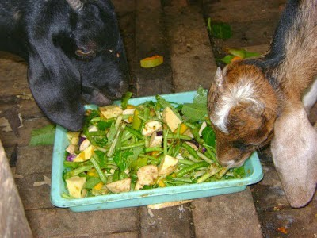
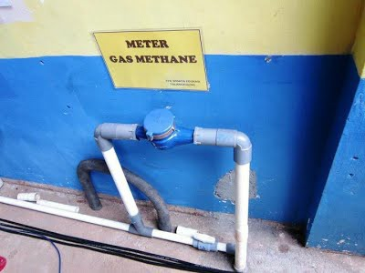
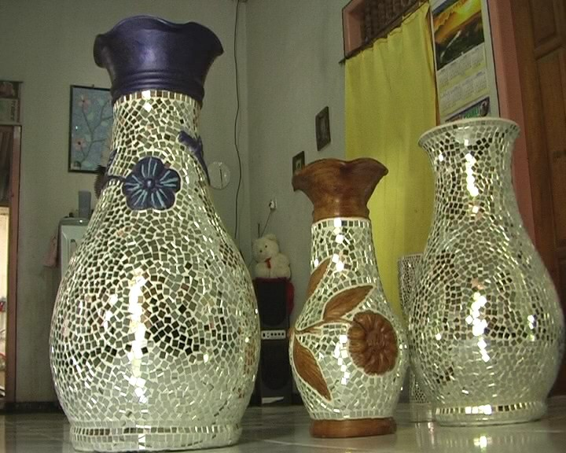
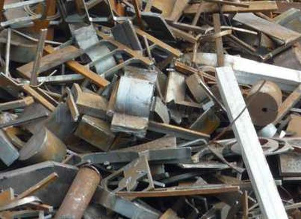
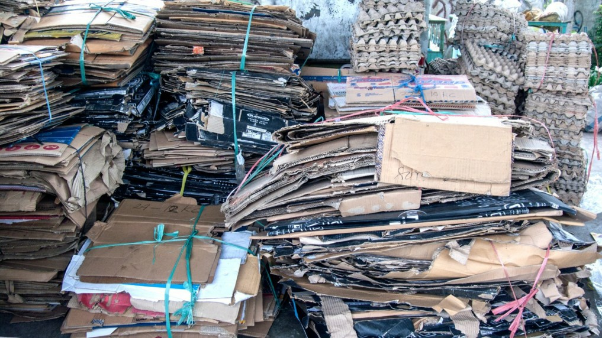

AYO JAGA DAN SELAMATKAN BUMI KITA !
Kalau tidak sekarang, kapan lagi ?
Kalau tidak kita, siapa lagi ?
Kalau tidak kita, siapa lagi ?
GO PRINSIP 5R !
REDUCE
REUSE
RECYCLE
REPLACE
REPLANT

KERAJINAN
Kerajinan tangan dari barang bekas. Barang bekas yang sering kita abaikan bila dikelola dengan baik bisa menjadi sebuah barang yang memiliki nilai yang tinggi, misalnya seperti tas dan tempat tisu.

PUPUK KOMPOS
Pasti kalian pernah melihat banyak daun rontok di depan rumah dan bahkan melihat banyak sisa sayur dan buah yang terbuang di pasar, kita dapat memanfaatkannya untuk membuat pupuk kompos.

KERTAS DAUR ULANG
Kertas buram, kardus, tas dari bahan kertas. adalah salah satu pemanfaatan kertas daur ulang, Misalkan pohon pinus sebagai salah satu bahan utama pembuatan kertas sudah punah apa yang akan terjadi?.

PAKAN TERNAK
Sebagian besar masyarakan indonesia mempunyai hewan peliharaan ataupun hewan ternak, kita dapat memanfaatkan limbah organik dari restoran ataupun rumah tangga seperti sayuran sebagai makanan ternak.

GAS METANA
Kalian pasti tahu kalau gas bumi tidak akan ada untuk selamanya, maka dari itu mari kita bergerak untuk manfaatkan limbah menjadi gas alternatif untuk kebutuhan rumah tangga, misalnya gas metana.

DAUR ULANG KACA
Kalian pasti pernah memecahkan kaca kan? pasti setelah itu kalian buang, perlu kalian tahu bahwa kaca bisa di daur ulang untuk pembuatan vas bunga maupun di lebur kembali menjadi kerajinan nilai jual tinggi.

DAUR ULANG LOGAM
Biasanya setelah minum minuman bersoda banyak orang membuang kaleng sembarangan, kalian perlu tahu bahwa bekas kaleng minuman dan biskuit maupun bahan logam lain bisa di daur ulang.

BANK SAMPAH
Semakin hari, semakin menumpuk sampah di dunia ini. Bank sampah salah satu tempat berkumpulnya para pengepul sampah untuk memilah sampah, dan terjadi transaksi jual beli untuk dilakukan RECYCLE.
SELAMATKAN BUMI KITA !
Bumi merupakan planet yang indah akan kekayaan alam dan makluknya, semua makluk akan sedih jika tempat tinggalnya rusak, begitu pula dengan bumi, jika bumi kita dirusak secara sengaja ataupun tidak oleh pihak yang tidak bertanggung jawab maka bumi yang kita tinggali saat ini akan musnah.
Apalagi kondisi bumi saat ini semakin buruk dengan adanya penebangan liar dan sampah menumpuk di mana-mana.
Bumi merupakan planet yang indah akan kekayaan alam dan makluknya, semua makluk akan sedih jika tempat tinggalnya rusak, begitu pula dengan bumi, jika bumi kita dirusak secara sengaja ataupun tidak oleh pihak yang tidak bertanggung jawab maka bumi yang kita tinggali saat ini akan musnah.
Apalagi kondisi bumi saat ini semakin buruk dengan adanya penebangan liar dan sampah menumpuk di mana-mana.
BACA
Ikuti Kami